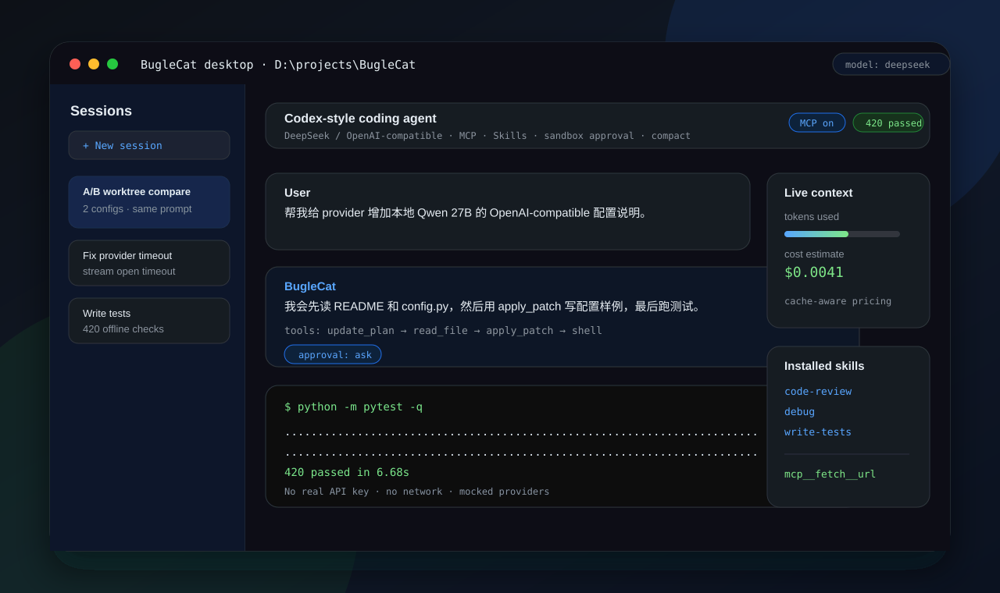

这是一份给 nanocodex 的图解型设计哲学手册。它不只回答“这个 agent 有什么能力”，
而是试图回答三个更根本的问题：为什么能力会这样组合、为什么成本会这样分配、为什么失败会这样暴露。
把这份文档当成一张“约束 → 推论 → 机制 → 失效模式”的地图，而不是产品功能清单。
框架不负责制造更高推理天花板，只负责减少随机失败。
一次成功不能证明能力，一次失败也不能直接判死刑。
系统默认少给，而不是默认全给。
如果让判断节点持有工具，它很可能直接执行，而不是判断。
reason() 无工具。run() / run_worker() 才有工具。文件、命令输出、web、MCP 结果都是数据，不是指令。
ToolContext 与 ToolRegistry。上图最关键的一点是：判断路径和执行路径被故意拆开。这不是为了抽象层次好看，而是为了让“会动手的节点”和“只能判断的节点”从权限上就不是同一个生物。

不是经理，是预算开关。
它不试图理解全部任务，只负责决定值不值得多花结构成本。
不是 TODO 生成器，是搜索空间压缩器。
它把 worker 的独立尝试放进同一坐标系里，让 verifier 有比较基准。
真正会改文件、跑命令、试实现的人。
每个 worker 都是一次独立尝试。并行的前提是：它们不能共享危险写路径。
整个结构的上限，不是装饰性质检。
verify 太弱，best-of-N 就会变成“多花钱买错觉”。
不是外挂知识库，是项目驯化层。
它不提高 IQ，只减少同一个坑摔两次的概率。
不是背景板，而是结界。
所有动作统一经过它们，风险管理不是提示词，而是执行时物理门槛。
max_depth、max_subtasks 之类的收口阀门。因为边际收益递减。第二个 worker 经常很值，第三个在高风险任务上仍有意义，但继续往上加，收益未必覆盖 token 成本与 wall-clock 时间。
| 设计动作 | 买来的东西 | 付出的代价 | 什么时候不划算 |
|---|---|---|---|
| best-of-N | 提高至少一个候选做对的概率 | 多次 worker 调用 | verifier 太弱时，增益会被封顶 |
| closed-loop retry | 把 verifier 反馈喂回下一轮 | 整轮重跑 | 反馈模糊或错误时只会放大浪费 |
| recursive decomposition | 把高风险任务切成可顺序吸收的子战役 | 调用数近似乘法增长 | 没 cheap tier、或子任务过度拆分时 |
| checkpoint | 失败后仍能回滚 | 磁盘拷贝与额外 I/O | 超大工作区里快照成本上升 |
控制“物理上允许什么”。路径、可写根、网络许可都在这里决定。
控制“越界时怎么办”。它不是布尔开关，而是系统与用户之间的风险协议。
把确定性规则挂在动作前后。它们不靠模型自觉，而是外置质量闸门。
用户意图 ↓ ToolRegistry::execute ↓ pre_tool hook ↓ approval classify / ask / deny ↓ PolicyExecutor / apply_patch ↓ post_tool hook ↓ session log + checkpoint + next turn
这一整套设计说明了一个很清楚的态度：真正危险的地方不能只靠提示词说“请小心”。必须让危险动作在运行时撞上一道墙，哪怕这道墙有时只是策略级，而不是内核级。
系统 prompt 只挂 name + description，正文通过 skill 工具按需取回。
大工具表不全量铺开；先给核心工具，再让模型按关键词主动搜能力。
不是把整个记忆库塞进来，而是根据 query 做 lightweight semantic ranking，返回少量可验证 leads。
本地历史完整保留，但 provider 只看“发送时编辑视图”，因此既节流又可审计。
用户发出一个高风险编码请求。系统首先不会热血上头，而是先问：这件事简单吗？
主旨：先判断投入级别，再决定是否升级结构。
planner 出场，生成可对齐的任务计划。它不是抢戏，而是把 worker 的尝试压进同一坐标系。
主旨：让并行尝试可比较。
多个 worker 在隔离环境里分别尝试。这里的浪漫不是“各显神通”，而是“互不踩写”。
主旨：先隔离，后比较。
verifier 不是看谁说得更响，而是看谁更像完成了任务。如果 FAIL，反馈会被喂回闭环重试。
主旨：失败要大声，问题要具体。
通过者被 promote，失败者也不会把工作区炸穿，因为 checkpoint 与 restore 在后面兜底。
主旨：真正的强，不是永不失败，而是失败仍可逆。
如果本轮确认了一个稳定 gotcha 或项目约定，remember 才值得调用。
主旨：记忆是项目驯化，不是神话升级。
nanocodex 不是“给模型套个壳”，而是把模型、工具、预算、回滚和风险协议拼成一条可控的工作流水线。
先承认约束，再让机制从约束里被逼出来；如果一个机制追溯不到约束，它大概率只是装饰。
这套结构的强项不是抬高模型智商，而是把偶尔做对的事，变成更经常做对；把做错的代价，变得可逆、可见、可审计。
它不解决一切，也不假装解决一切；它只是把最值得认真设计的几道边界，做成了系统默认行为。